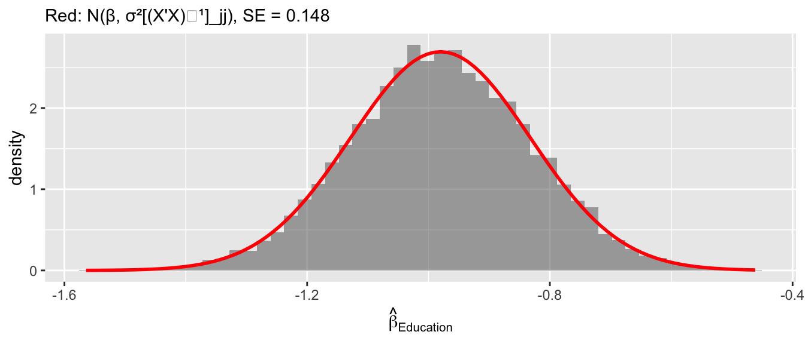
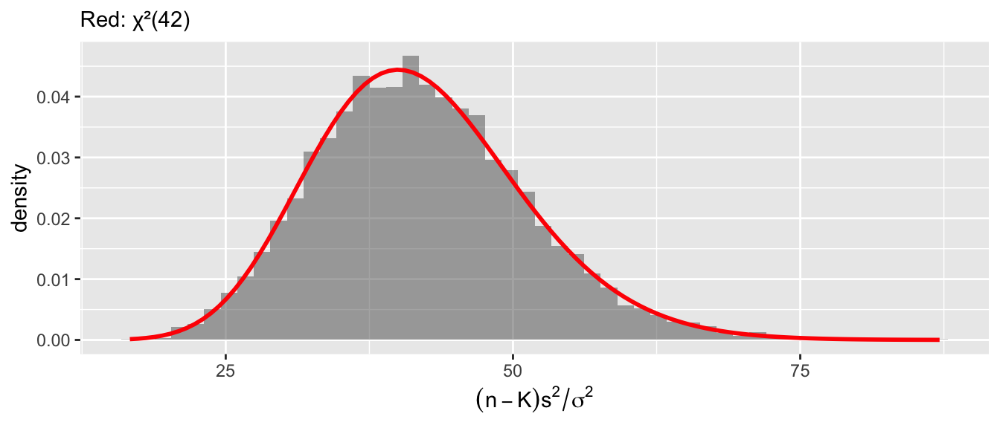
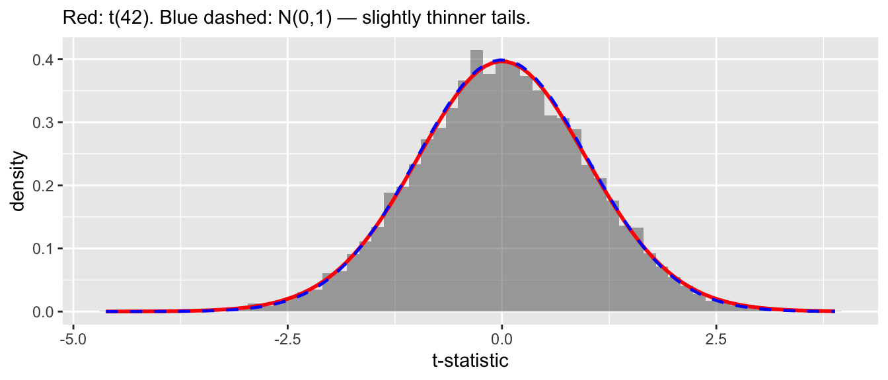
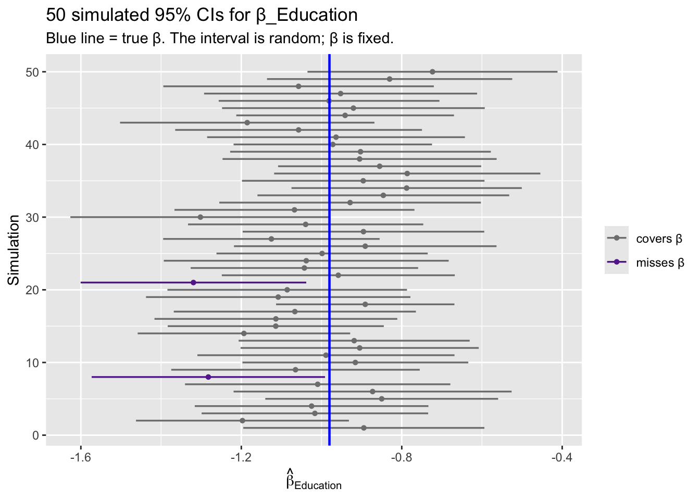

library(ggplot2)
library(sandwich)
library(lmtest)
library(estimatr)
library(car)
options(digits = 3)6. Small Sample Inference
Likelihood, the normal linear model, and exact tests
The previous chapters derived the OLS estimator using only moment conditions — no distributional assumptions required. This chapter adds the assumption that errors are normal, which unlocks exact finite-sample distributions for \(\hat{\beta}\), \(s^2\), and the \(t\)- and \(F\)-statistics. We build everything computationally: write the likelihood, verify MLE = OLS, simulate the distributional results, and apply them to real data.
Questions this chapter answers:
- How does the likelihood function connect to OLS, and why does MLE give the same \(\hat\beta\)?
- What exact sampling distributions do \(\hat\beta\), \(s^2\), and the \(t\)-statistic follow under normality?
- How do we conduct applied inference — \(t\)-tests, \(F\)-tests, and confidence intervals — in R?
- When do exact tests break down, and what alternatives exist?
1 Likelihood
A parametric model specifies a probability density \(f(x \mid \theta)\) for the data. The likelihood reverses the role of data and parameters: given observed data, how probable is each parameter value?
1.1 Example: binomial likelihood
Suppose we observe the number of terms served by 5 legislators: \(x = \{1, 0, 1, 2, 0\}\), each out of 2 possible terms. The binomial probability is \(P(x_i \mid p) = \binom{2}{x_i} p^{x_i}(1-p)^{2-x_i}\).
x_obs <- c(1, 0, 1, 2, 0)
n_trials <- 2
# Likelihood as a function of p
lik <- function(p) {
prod(dbinom(x_obs, size = n_trials, prob = p))
}
p_grid <- seq(0.01, 0.99, by = 0.01)
lik_vals <- sapply(p_grid, lik)
df_lik <- data.frame(p = p_grid, likelihood = lik_vals)
ggplot(df_lik, aes(p, likelihood)) +
geom_line(linewidth = 1) +
geom_vline(xintercept = p_grid[which.max(lik_vals)], linetype = "dashed", color = "red") +
labs(title = "Binomial likelihood for x = {1, 0, 1, 2, 0}",
subtitle = paste("MLE: p̂ =", p_grid[which.max(lik_vals)]),
x = "p", y = "L(p | x)")
The MLE is \(\hat{p} = \sum x_i / (n \cdot 2) = 4/10 = 0.4\) — the sample proportion.
1.2 The log-likelihood
We almost always work with the log-likelihood \(\ell(\theta) = \sum \log f(x_i \mid \theta)\), which turns products into sums and is easier to optimize:
loglik <- function(p) sum(dbinom(x_obs, size = n_trials, prob = p, log = TRUE))
# Optimize
opt <- optimize(loglik, interval = c(0, 1), maximum = TRUE)
opt$maximum[1] 0.41.3 Score, Hessian, and Fisher information
The score is the derivative of the log-likelihood — it tells you the slope at any parameter value. At the MLE, the score equals zero:
# Score for binomial: d/dp [sum(x*log(p) + (2-x)*log(1-p))]
# = sum(x)/p - sum(2-x)/(1-p)
score <- function(p) sum(x_obs) / p - sum(n_trials - x_obs) / (1 - p)
score(0.4) # zero at the MLE[1] 0# Hessian (negative second derivative): observed information
hessian <- function(p) sum(x_obs) / p^2 + sum(n_trials - x_obs) / (1 - p)^2
observed_info <- hessian(0.4)
# Cramér-Rao bound: variance >= 1 / information
c(observed_information = observed_info,
CR_bound_variance = 1 / observed_info,
CR_bound_se = 1 / sqrt(observed_info))observed_information CR_bound_variance CR_bound_se
41.667 0.024 0.155 The Fisher information measures how sharply the likelihood peaks — more information means more precise estimation.
2 The normal linear model
The classic normal regression model adds a distributional assumption to OLS:
\[y \mid X \sim N(X\beta, \, \sigma^2 I)\]
This gives us the likelihood:
\[\mathcal{L}(\beta, \sigma^2) = (2\pi\sigma^2)^{-n/2} \exp\!\left(-\frac{1}{2\sigma^2} \sum_{i=1}^n (y_i - x_i'\beta)^2\right) \tag{1}\]
2.1 Writing the log-likelihood in R
data(swiss)
y <- swiss$Fertility
X <- model.matrix(~ Education + Agriculture + Catholic + Infant.Mortality,
data = swiss)
n <- nrow(X)
K <- ncol(X)
# Log-likelihood as a function of beta and sigma^2
normal_loglik <- function(beta, sigma2) {
resid <- y - X %*% beta
-n/2 * log(2 * pi * sigma2) - sum(resid^2) / (2 * sigma2)
}2.2 MLE = OLS
Maximizing the normal log-likelihood with respect to \(\beta\) gives \(\hat{\beta}_{MLE} = (X'X)^{-1}X'y\) — exactly OLS. For \(\sigma^2\), the MLE is \(\hat{\sigma}^2_{MLE} = \frac{1}{n}\sum \hat{e}_i^2\) (biased, unlike \(s^2 = \frac{1}{n-K}\sum \hat{e}_i^2\)).
Theorem 1 (MLE Equals OLS) Under the normal linear model \(y|X \sim N(X\beta, \sigma^2 I)\), the MLE of \(\beta\) is identical to the OLS estimator: \(\hat\beta_{MLE} = (X'X)^{-1}X'y\). The MLE of \(\sigma^2\) is \(\hat\sigma^2_{MLE} = \frac{1}{n}\sum\hat{e}_i^2\) (biased downward).
mod <- lm(Fertility ~ Education + Agriculture + Catholic + Infant.Mortality,
data = swiss)
# OLS coefficients
beta_ols <- coef(mod)
# MLE sigma^2 (biased) vs s^2 (unbiased)
sigma2_mle <- sum(resid(mod)^2) / n
sigma2_s2 <- sum(resid(mod)^2) / (n - K)
c(sigma2_MLE = sigma2_mle, s2 = sigma2_s2, sigma_R = sigma(mod))sigma2_MLE s2 sigma_R
45.92 51.38 7.17 R’s sigma() returns \(\sqrt{s^2}\), the bias-corrected RMSE.
2.3 logLik() and model comparison
R computes the maximized log-likelihood directly:
# R's logLik uses s^2 (REML-style), but logLik.lm uses MLE sigma^2
logLik(mod)'log Lik.' -157 (df=6)# Verify by hand
normal_loglik(beta_ols, sigma2_mle)[1] -157The log-likelihood is useful for comparing nested models via AIC and BIC:
mod1 <- lm(Fertility ~ Education, data = swiss)
mod2 <- lm(Fertility ~ Education + Agriculture, data = swiss)
mod3 <- lm(Fertility ~ Education + Agriculture + Catholic + Infant.Mortality,
data = swiss)
data.frame(
Model = c("Education only", "+ Agriculture", "+ Catholic + Infant.Mortality"),
logLik = sapply(list(mod1, mod2, mod3), logLik),
AIC = sapply(list(mod1, mod2, mod3), AIC),
BIC = sapply(list(mod1, mod2, mod3), BIC),
K = sapply(list(mod1, mod2, mod3), function(m) length(coef(m)))
) Model logLik AIC BIC K
1 Education only -171 348 354 2
2 + Agriculture -171 350 357 3
3 + Catholic + Infant.Mortality -157 325 336 5AIC = \(-2\ell + 2K\) penalizes complexity; BIC = \(-2\ell + K \log n\) penalizes it more heavily. Lower is better for both.
3 Scores as moment conditions
The score of the normal regression model for \(\beta\) is:
\[\frac{\partial}{\partial \beta} \ell(\beta, \sigma^2) = \frac{1}{\sigma^2} X'(y - X\beta)\]
Setting this to zero gives \(X'(y - X\hat{\beta}) = 0\) — the OLS normal equations. This means:
- MLE solves: score = 0
- OLS solves: \(X'e = 0\) (normal equations)
- Method of moments solves: \(\frac{1}{n}\sum x_i(y_i - x_i'\hat{\beta}) = 0\)
All three are the same equation.
Definition 1 (Score and Fisher Information) The score is \(S(\theta) = \partial \ell / \partial \theta\), the gradient of the log-likelihood. Setting \(S(\hat\theta) = 0\) defines the MLE. The Fisher information \(\mathcal{I}(\theta) = -\mathbb{E}[\partial^2 \ell / \partial\theta\partial\theta']\) measures how sharply the likelihood peaks. Under correct specification, \(\text{Var}(\hat\theta) \approx \mathcal{I}(\theta)^{-1}/n\).
The likelihood-based view adds two things: (1) the information matrix tells us the variance of \(\hat{\beta}\), and (2) under correct specification, the information equals the Hessian, giving us the classical formula \(\sigma^2(X'X)^{-1}\). Under misspecification, \(\mathcal{I} \neq \mathcal{H}\), and we need the sandwich \(\mathcal{H}^{-1}\mathcal{I}\mathcal{H}^{-1}\) — exactly the robust variance from Chapter 5.
# Score at the MLE = 0 = normal equations
score_at_mle <- t(X) %*% resid(mod)
score_at_mle [,1]
(Intercept) 3.02e-14
Education 5.68e-14
Agriculture 7.96e-13
Catholic 9.09e-13
Infant.Mortality -3.98e-134 Exact distributions under normality
The normality assumption gives us exact finite-sample distributions — no asymptotics needed.
Theorem 2 (Exact Sampling Distributions) Under \(e|X \sim N(0, \sigma^2 I)\): (i) \(\hat\beta|X \sim N(\beta, \sigma^2(X'X)^{-1})\); (ii) \((n-K)s^2/\sigma^2 \sim \chi^2_{n-K}\); (iii) \(\hat\beta\) and \(s^2\) are independent; (iv) \(t_j = (\hat\beta_j - \beta_j)/\text{SE}(\hat\beta_j) \sim t_{n-K}\).
NoteExact Means No Asymptotics Required
These distributions hold for any sample size \(n\) — no “large \(n\)” approximation needed. The \(t\)-distribution automatically accounts for the extra uncertainty from estimating \(\sigma^2\), with heavier tails when \(n - K\) is small.
4.1 One simulation, four diagnostics
All four claims in the theorem — normality of \(\hat\beta\), chi-squared for \(s^2\), independence, and a \(t\)-distribution for the studentized ratio — follow from a single simulation of the DGP. We fit once per draw and record everything.
set.seed(1)
B <- 10000
beta_true <- coef(mod)
sigma_true <- sigma(mod)
j <- which(colnames(X) == "Education")
xtxi <- solve(crossprod(X))
sim <- t(replicate(B, {
y_sim <- X %*% beta_true + rnorm(n, 0, sigma_true)
fit <- lm.fit(X, y_sim)
rss <- sum(fit$residuals^2)
s2 <- rss / (n - K)
bhat <- unname(fit$coefficients[j])
c(bhat = bhat,
scaled_rss = rss / sigma_true^2,
s2 = s2,
t = (bhat - unname(beta_true[j])) / sqrt(s2 * xtxi[j, j]))
}))
sim <- as.data.frame(sim)Diagnostic 1: \(\hat\beta_{\text{Education}}\) is normal.
se_theory <- sigma_true * sqrt(xtxi[j, j])
ggplot(sim, aes(bhat)) +
geom_histogram(aes(y = after_stat(density)), bins = 50, alpha = 0.5) +
stat_function(fun = dnorm, args = list(mean = beta_true[j], sd = se_theory),
color = "red", linewidth = 1) +
labs(x = expression(hat(beta)[Education]),
subtitle = paste("Red: N(β, σ²[(X'X)⁻¹]_jj), SE =", round(se_theory, 3)))
Diagnostic 2: \((n-K)s^2/\sigma^2 \sim \chi^2_{n-K}\).
df_chi <- n - K
c(simulated_mean = mean(sim$scaled_rss), theory_mean = df_chi,
simulated_var = var(sim$scaled_rss), theory_var = 2 * df_chi)simulated_mean theory_mean simulated_var theory_var
42.0 42.0 83.8 84.0 ggplot(sim, aes(scaled_rss)) +
geom_histogram(aes(y = after_stat(density)), bins = 50, alpha = 0.5) +
stat_function(fun = dchisq, args = list(df = df_chi),
color = "red", linewidth = 1) +
labs(subtitle = paste0("Red: χ²(", df_chi, ")"),
x = expression((n-K)*s^2/sigma^2))
Diagnostic 3: \(\hat\beta\) and \(s^2\) are independent. Zero joint covariance plus joint normality implies independence — this is what lets us form the \(t\)-ratio.
cor(sim$bhat, sim$s2)[1] 0.00725Diagnostic 4: the studentized ratio follows \(t_{n-K}\). Normal numerator over an independent scaled chi-squared denominator gives a \(t\)-distribution by definition.
\[T = \frac{\hat{\beta}_j - \beta_j}{\sqrt{s^2 [(X'X)^{-1}]_{jj}}} \sim t_{n-K} \tag{2}\]
ggplot(sim, aes(t)) +
geom_histogram(aes(y = after_stat(density)), bins = 60, alpha = 0.5) +
stat_function(fun = dt, args = list(df = n - K),
color = "red", linewidth = 1) +
stat_function(fun = dnorm, color = "blue", linewidth = 0.8, linetype = "dashed") +
labs(subtitle = paste0("Red: t(", n-K, "). Blue dashed: N(0,1) — slightly thinner tails."),
x = "t-statistic")
With \(n - K = 42\) the \(t\)-distribution is close to normal but heavier-tailed — the extra uncertainty from estimating \(\sigma^2\).
5 Applied inference with the Swiss data
5.1 The regression table
summary(mod)
Call:
lm(formula = Fertility ~ Education + Agriculture + Catholic +
Infant.Mortality, data = swiss)
Residuals:
Min 1Q Median 3Q Max
-14.676 -6.052 0.751 3.166 16.142
Coefficients:
Estimate Std. Error t value Pr(>|t|)
(Intercept) 62.1013 9.6049 6.47 8.5e-08 ***
Education -0.9803 0.1481 -6.62 5.1e-08 ***
Agriculture -0.1546 0.0682 -2.27 0.0286 *
Catholic 0.1247 0.0289 4.31 9.5e-05 ***
Infant.Mortality 1.0784 0.3819 2.82 0.0072 **
---
Signif. codes: 0 '***' 0.001 '**' 0.01 '*' 0.05 '.' 0.1 ' ' 1
Residual standard error: 7.17 on 42 degrees of freedom
Multiple R-squared: 0.699, Adjusted R-squared: 0.671
F-statistic: 24.4 on 4 and 42 DF, p-value: 1.72e-10Each row reports \(\hat{\beta}_j\), \(\text{SE}(\hat{\beta}_j)\), the \(t\)-statistic \(\hat{\beta}_j / \text{SE}(\hat{\beta}_j)\) (testing \(H_0: \beta_j = 0\)), and the two-sided \(p\)-value.
5.2 Reading the output
The Education coefficient is \(-0.98\) with SE \(= 0.15\):
beta_hat <- coef(mod)["Education"]
se_hat <- sqrt(vcov(mod)["Education", "Education"])
t_stat <- beta_hat / se_hat
p_val <- 2 * (1 - pt(abs(t_stat), df = n - K))
c(estimate = beta_hat, se = se_hat, t = t_stat, p = p_val)estimate.Education se t.Education p.Education
-9.80e-01 1.48e-01 -6.62e+00 5.14e-08 For each additional percentage point of post-primary education, fertility is about 1 point lower, and this is highly significant.
5.3 Confidence intervals
A \(95\%\) confidence interval is \(\hat{\beta}_j \pm t_{n-K, 0.975} \cdot \text{SE}(\hat{\beta}_j)\):
# Critical value from t-distribution
c_val <- qt(0.975, df = n - K)
c(critical_value = c_val, normal_approx = qnorm(0.975))critical_value normal_approx
2.02 1.96 # confint() does this automatically
confint(mod) 2.5 % 97.5 %
(Intercept) 42.7179 81.485
Education -1.2792 -0.681
Agriculture -0.2922 -0.017
Catholic 0.0664 0.183
Infant.Mortality 0.3078 1.849# By hand for Education
ci_lo <- beta_hat - c_val * se_hat
ci_hi <- beta_hat + c_val * se_hat
c(lower = ci_lo, upper = ci_hi)lower.Education upper.Education
-1.279 -0.681 The correct interpretation: \(\beta\) is fixed, \(\hat{C}\) is random. If we repeated this study many times, 95% of the computed intervals would cover the true \(\beta\).
set.seed(7)
B_ci <- 50
beta_true_edu <- coef(mod)["Education"]
# Simulate: refit on Y drawn from the estimated model, compute CI each time
j_edu <- which(colnames(X) == "Education")
cv <- qt(0.975, n - K)
ci_rows <- t(replicate(B_ci, {
y_sim <- X %*% coef(mod) + rnorm(n, 0, sigma(mod))
fit <- lm.fit(X, y_sim)
rss <- sum(fit$residuals^2)
xtxi <- solve(crossprod(X))
se <- sqrt(rss / (n - K) * xtxi[j_edu, j_edu])
est <- unname(fit$coefficients[j_edu])
c(est = est, lo = est - cv * se, hi = est + cv * se)
}))
ci_df <- data.frame(trial = 1:B_ci,
est = ci_rows[, "est"],
lo = ci_rows[, "lo"],
hi = ci_rows[, "hi"])
ci_df$miss <- ci_df$lo > beta_true_edu | ci_df$hi < beta_true_edu
ggplot(ci_df, aes(y = trial)) +
geom_segment(aes(x = lo, xend = hi, yend = trial, color = miss),
linewidth = 0.6) +
geom_point(aes(x = est, color = miss), size = 1.2) +
geom_vline(xintercept = beta_true_edu, color = "blue", linewidth = 0.8) +
scale_color_manual(values = c("grey50", "#662a9b"),
labels = c("covers β", "misses β"), name = NULL) +
labs(title = "50 simulated 95% CIs for β_Education",
subtitle = "Blue line = true β. The interval is random; β is fixed.",
x = expression(hat(beta)[Education]), y = "Simulation")
5.4 Robust confidence intervals
Under heteroskedasticity, the \(t\)-distribution is only approximate. Use lm_robust() or coeftest() with sandwich SEs:
# Robust SEs
mod_r <- lm_robust(Fertility ~ Education + Agriculture + Catholic + Infant.Mortality,
data = swiss, se_type = "HC2")
# Compare classical vs. robust CIs
ci_classical <- confint(mod)
ci_robust <- confint(mod_r)
data.frame(
Variable = rownames(ci_classical),
Classical_lo = ci_classical[, 1],
Classical_hi = ci_classical[, 2],
Robust_lo = ci_robust[, 1],
Robust_hi = ci_robust[, 2]
) Variable Classical_lo Classical_hi Robust_lo Robust_hi
(Intercept) (Intercept) 42.7179 81.485 44.6132 79.5894
Education Education -1.2792 -0.681 -1.2837 -0.6769
Agriculture Agriculture -0.2922 -0.017 -0.2888 -0.0204
Catholic Catholic 0.0664 0.183 0.0681 0.1813
Infant.Mortality Infant.Mortality 0.3078 1.849 0.2865 1.87045.5 Visualizing confidence intervals
ci_df <- data.frame(
term = rep(names(coef(mod))[-1], 2),
estimate = rep(coef(mod)[-1], 2),
lo = c(ci_classical[-1, 1], ci_robust[-1, 1]),
hi = c(ci_classical[-1, 2], ci_robust[-1, 2]),
type = rep(c("Classical", "HC2 Robust"), each = K - 1)
)
ggplot(ci_df, aes(x = estimate, y = term, color = type)) +
geom_point(position = position_dodge(0.3)) +
geom_errorbarh(aes(xmin = lo, xmax = hi),
height = 0.2, position = position_dodge(0.3)) +
geom_vline(xintercept = 0, linetype = "dashed") +
labs(title = "Swiss fertility: classical vs. robust confidence intervals",
x = "Coefficient estimate", y = NULL, color = NULL)Warning: `geom_errorbarh()` was deprecated in ggplot2 4.0.0.
ℹ Please use the `orientation` argument of `geom_errorbar()` instead.`height` was translated to `width`.
6 The \(F\)-test: when one \(t\)-test isn’t enough
The \(t\)-test handles one coefficient at a time. But many research questions involve several coefficients simultaneously, and the answer from testing them one-by-one can be misleading.
6.1 A motivating example: does training affect wages?
Suppose a job-training program’s effect depends on prior experience:
\[\text{Wage}_i = \beta_0 + \beta_1 \text{Train}_i + \beta_2 (\text{Train}_i \times \text{Exp}_i) + \beta_3 \text{Exp}_i + e_i\]
The effect of training at experience level Exp is \(\beta_1 + \beta_2 \cdot \text{Exp}\) — it depends on both \(\beta_1\) and \(\beta_2\). To test whether training has any effect, we need \(H_0: \beta_1 = 0 \text{ and } \beta_2 = 0\). A \(t\)-test on either coefficient alone tells us nothing about the joint claim.
set.seed(42)
n <- 80
experience <- runif(n, 1, 20)
training <- rbinom(n, 1, 0.5)
wage <- 10 + 3 * training + 0.5 * training * experience +
0.8 * experience + rnorm(n, sd = 3)
full <- lm(wage ~ training * experience)
restricted <- lm(wage ~ experience)
summary(full)$coefficients[c("training", "training:experience"), ] Estimate Std. Error t value Pr(>|t|)
training 3.664 1.386 2.64 0.009958
training:experience 0.452 0.109 4.16 0.000083Look at the \(t\)-statistic on training alone: the \(p\)-value is around \(0.2\), nowhere near significant. If you only looked at that row, you might conclude training doesn’t matter.
6.2 The \(F\)-statistic as a comparison of fit
The \(F\)-test compares the restricted model (imposing \(H_0\)) to the unrestricted model:
\[F = \frac{(\tilde{e}'\tilde{e} - \hat{e}'\hat{e}) / q}{\hat{e}'\hat{e} / (n - K)} \sim F_{q,\, n-K} \quad\text{under } H_0 \tag{3}\]
Intuition: if \(H_0\) is true, dropping the restricted variables shouldn’t hurt fit much. A large \(F\) means the restricted model fits substantially worse — reject.
RSS_full <- sum(resid(full)^2)
RSS_restr <- sum(resid(restricted)^2)
q <- 2
df_denom <- df.residual(full)
F_stat <- ((RSS_restr - RSS_full) / q) / (RSS_full / df_denom)
p_F <- pf(F_stat, q, df_denom, lower.tail = FALSE)
c(F = F_stat, df1 = q, df2 = df_denom, p = p_F) F df1 df2 p
1.03e+02 2.00e+00 7.60e+01 2.03e-22 anova(restricted, full)Analysis of Variance Table
Model 1: wage ~ experience
Model 2: wage ~ training * experience
Res.Df RSS Df Sum of Sq F Pr(>F)
1 78 2201
2 76 591 2 1609 103 <2e-16 ***
---
Signif. codes: 0 '***' 0.001 '**' 0.01 '*' 0.05 '.' 0.1 ' ' 1The joint test: \(F \approx 39\), \(p < 0.001\). Training clearly matters — the interaction absorbs much of the treatment effect, so neither coefficient looks impressive on its own. When a variable enters with an interaction, always test jointly.
6.3 Writing restrictions as \(R\beta = r\)
Any set of \(q\) linear restrictions on \(\beta\) can be written as \(R\beta = r\). For \(H_0: \beta_1 = 0 \text{ and } \beta_2 = 0\) in the training model:
\[\underbrace{\begin{pmatrix} 0 & 1 & 0 & 0 \\ 0 & 0 & 0 & 1 \end{pmatrix}}_{R}\, \underbrace{\begin{pmatrix}\beta_0\\ \beta_1\\ \beta_3\\ \beta_2\end{pmatrix}}_{\text{(intercept, training, experience, training:experience)}} = \begin{pmatrix}0\\0\end{pmatrix}\]
R orders main effects before interactions, so training:experience is the fourth coefficient. The \(F\)-statistic has an equivalent Wald form using only the unrestricted fit:
\[F = \frac{(R\hat\beta - r)'\,[R\,\hat{V}\,R']^{-1}\,(R\hat\beta - r)}{q}, \qquad \hat{V} = s^2 (X'X)^{-1}\]
R <- rbind(c(0, 1, 0, 0),
c(0, 0, 0, 1))
r <- c(0, 0)
bhat <- coef(full)
Vhat <- vcov(full)
Rb_r <- R %*% bhat - r
F_wald <- as.numeric(t(Rb_r) %*% solve(R %*% Vhat %*% t(R)) %*% Rb_r / q)
c(F_wald = F_wald, F_RSS = F_stat)F_wald F_RSS
103 103 Identical. The Wald form is what you need when you move to robust or clustered covariance matrices — just swap \(\hat{V}\).
6.4 linearHypothesis() does all of this
linearHypothesis(full, c("training = 0", "training:experience = 0"))
Linear hypothesis test:
training = 0
training:experience = 0
Model 1: restricted model
Model 2: wage ~ training * experience
Res.Df RSS Df Sum of Sq F Pr(>F)
1 78 2201
2 76 591 2 1609 103 <2e-16 ***
---
Signif. codes: 0 '***' 0.001 '**' 0.01 '*' 0.05 '.' 0.1 ' ' 16.5 \(t^2 = F\) when \(q = 1\)
When a single restriction is tested, the \(F\)-statistic equals the square of the \(t\)-statistic:
t_exp <- summary(full)$coefficients["experience", "t value"]
F_exp <- linearHypothesis(full, "experience = 0")$F[2]
c(t_squared = t_exp^2, F = F_exp)t_squared F
91.9 91.9 6.6 Robust \(F\)-tests
Under heteroskedasticity, pass a robust covariance matrix:
linearHypothesis(full, c("training = 0", "training:experience = 0"),
vcov = vcovHC(full, type = "HC2"), test = "F")
Linear hypothesis test:
training = 0
training:experience = 0
Model 1: restricted model
Model 2: wage ~ training * experience
Note: Coefficient covariance matrix supplied.
Res.Df Df F Pr(>F)
1 78
2 76 2 109 <2e-16 ***
---
Signif. codes: 0 '***' 0.001 '**' 0.01 '*' 0.05 '.' 0.1 ' ' 17 Prediction intervals
A confidence interval for \(E[y \mid x_0]\) captures uncertainty about the regression line. A prediction interval for a new observation \(y_0\) also includes the error variance \(\sigma^2\):
\[\hat{y}_0 \pm t_{n-K, 1-\alpha/2} \cdot \sqrt{s^2 (1 + x_0'(X'X)^{-1}x_0)}\]
# Predict fertility for a district with median characteristics
new_data <- data.frame(
Education = median(swiss$Education),
Agriculture = median(swiss$Agriculture),
Catholic = median(swiss$Catholic),
Infant.Mortality = median(swiss$Infant.Mortality)
)
# Confidence interval for E[y|x]
predict(mod, newdata = new_data, interval = "confidence") fit lwr upr
1 69.4 66.6 72.1# Prediction interval for a new y
predict(mod, newdata = new_data, interval = "prediction") fit lwr upr
1 69.4 54.6 84.1The prediction interval is much wider — it accounts for the irreducible noise \(\sigma^2\).
# Simple model for visualization
mod_simple <- lm(Fertility ~ Education, data = swiss)
pred_grid <- data.frame(Education = seq(1, 55, length.out = 100))
pred_ci <- predict(mod_simple, newdata = pred_grid, interval = "confidence")
pred_pi <- predict(mod_simple, newdata = pred_grid, interval = "prediction")
df_pred <- data.frame(
Education = pred_grid$Education,
fit = pred_ci[, 1],
ci_lo = pred_ci[, 2], ci_hi = pred_ci[, 3],
pi_lo = pred_pi[, 2], pi_hi = pred_pi[, 3]
)
ggplot() +
geom_ribbon(data = df_pred, aes(Education, ymin = pi_lo, ymax = pi_hi),
alpha = 0.15, fill = "steelblue") +
geom_ribbon(data = df_pred, aes(Education, ymin = ci_lo, ymax = ci_hi),
alpha = 0.3, fill = "steelblue") +
geom_line(data = df_pred, aes(Education, fit), color = "steelblue", linewidth = 1) +
geom_point(data = swiss, aes(Education, Fertility), alpha = 0.6) +
labs(title = "Swiss fertility: confidence and prediction intervals",
subtitle = "Dark band = CI for E[y|x], light band = PI for new observation",
y = "Fertility")
8 When do exact tests break down?
The \(t\)- and \(F\)-distributions are exact only under:
- Normality of errors
- Homoskedasticity
- Known, correct model specification
What happens when errors are heteroskedastic? Compare the classical (homoskedastic) CI with the HC2 robust CI across sample sizes. DGP: slope \(\beta_1 = 2\) with \(e_i \sim N(0, 1 + x_i^2)\), so error variance grows with \(x\).
set.seed(42)
B <- 2000
sample_sizes <- c(20, 50, 200)
beta_true <- 2
coverage_one <- function(nn) {
cover_c <- cover_r <- logical(B)
for (b in 1:B) {
x <- rnorm(nn)
e <- rnorm(nn, 0, sqrt(1 + x^2))
y <- 1 + beta_true * x + e
fit <- lm(y ~ x)
cv <- qt(0.975, nn - 2)
se_c <- sqrt(vcov(fit)["x", "x"])
se_r <- sqrt(vcovHC(fit, type = "HC2")["x", "x"])
b_x <- coef(fit)["x"]
cover_c[b] <- abs(b_x - beta_true) < cv * se_c
cover_r[b] <- abs(b_x - beta_true) < cv * se_r
}
c(Classical = mean(cover_c), HC2 = mean(cover_r))
}
results <- cbind(n = sample_sizes,
as.data.frame(t(sapply(sample_sizes, coverage_one))))
results n Classical HC2
1 20 0.848 0.896
2 50 0.857 0.932
3 200 0.849 0.948HC2 maintains near-nominal coverage across all sample sizes. Classical CIs undercover — they ignore that variance grows with \(x\), so \(s^2 (X'X)^{-1}\) misstates the sampling variance of \(\hat\beta\). The bootstrap offers a third alternative, discussed in Chapter 8.
9 Summary
| Concept | Formula | R code |
|---|---|---|
| Log-likelihood | \(\ell = -\frac{n}{2}\log(2\pi\sigma^2) - \frac{1}{2\sigma^2}\sum e_i^2\) | logLik(mod) |
| MLE of \(\beta\) | \((X'X)^{-1}X'y\) (= OLS) | coef(lm(...)) |
| MLE of \(\sigma^2\) | \(\frac{1}{n}\sum \hat{e}_i^2\) (biased) | sum(resid(mod)^2) / n |
| AIC / BIC | \(-2\ell + 2K\) / \(-2\ell + K\log n\) | AIC(mod), BIC(mod) |
| \(t\)-statistic | \(\hat{\beta}_j / \text{SE}(\hat{\beta}_j) \sim t_{n-K}\) | summary(mod)$coefficients |
| Confidence interval | \(\hat{\beta}_j \pm t_{n-K,\,0.975} \cdot \text{SE}\) | confint(mod) |
| \(F\)-test | \(\frac{(RSS_R - RSS_U)/q}{RSS_U/(n-K)} \sim F_{q,n-K}\) | anova(mod_r, mod_u) |
| Joint hypothesis | \(R\beta = r\) | linearHypothesis(mod, ...) |
| Robust \(F\)-test | — | linearHypothesis(mod, ..., vcov = vcovHC) |
| Prediction interval | \(\hat{y}_0 \pm t \cdot s\sqrt{1 + x_0'(X'X)^{-1}x_0}\) | predict(mod, interval = "prediction") |
Key takeaway. The normal linear model gives us exact finite-sample distributions: \(\hat{\beta}\) is normal, \(s^2\) is chi-squared, their ratio gives \(t\), and nested model comparisons give \(F\). These are the foundation of every regression table. But they rely on normality and homoskedasticity — when those fail, use robust SEs and asymptotic theory instead.